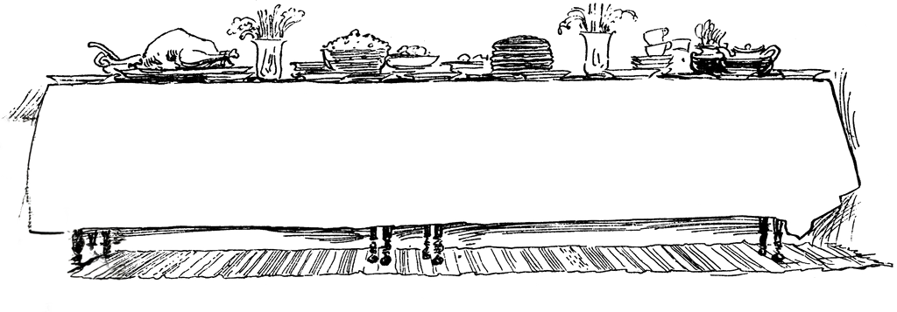
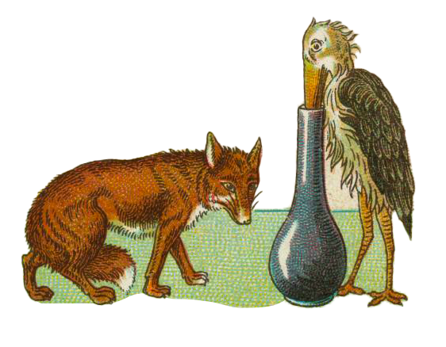

So a day was appointed when the Fox should visit the Stork,

But when they were seated at the table all that was for their dinner was contained in a very long-necked jaw with a narrow mouth in which the Fox could not insert his snout, so all he could manage to do was lick the inside of the jar.
